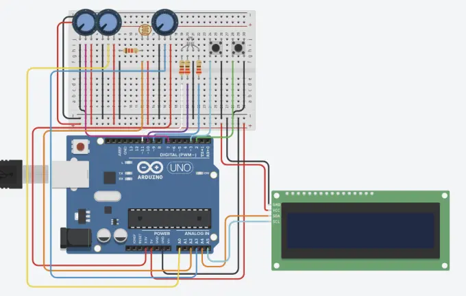
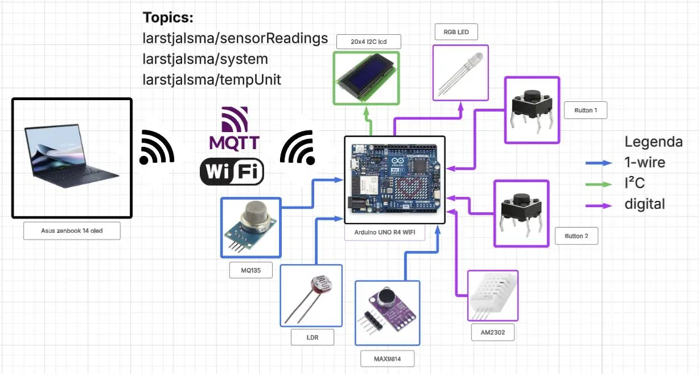
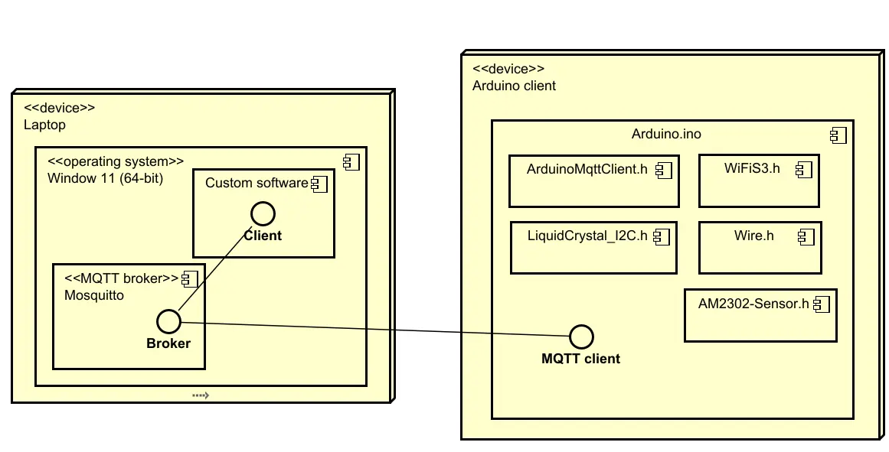
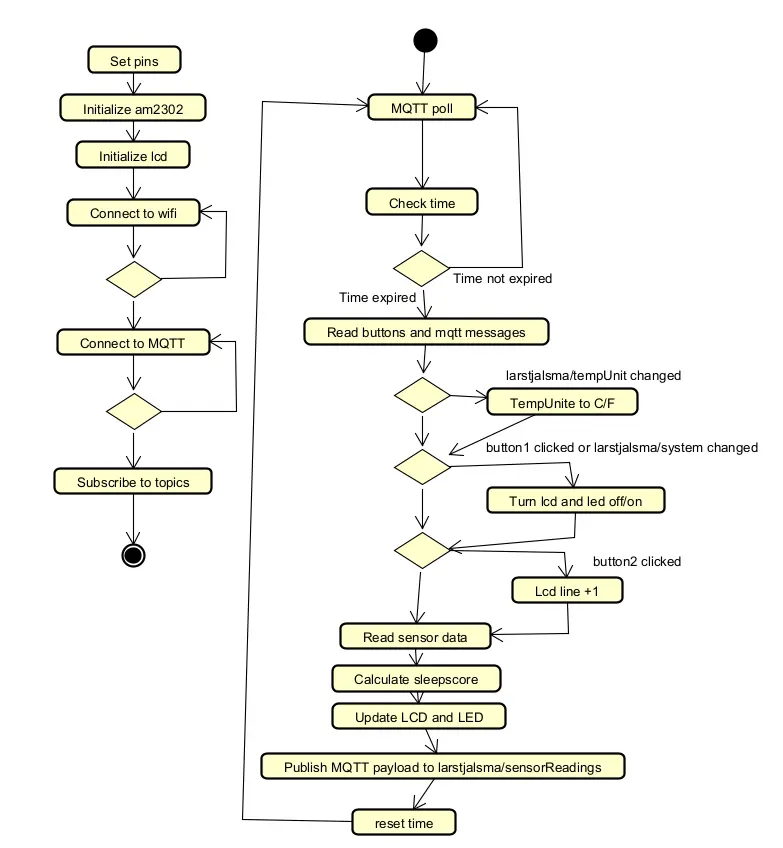
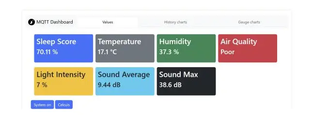
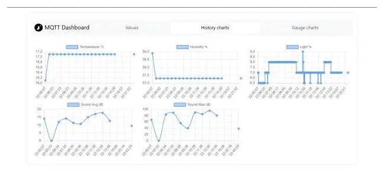
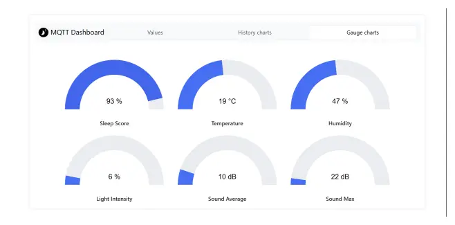

projecten / slaapomgevingsmeter
Slaapomgevingsmeter
Een apparaat dat meet hoe geschikt je slaapkamer is om in te slapen. Een Arduino UNO R4 WiFi leest vijf sensoren uit en berekent een slaapscore. Die zie je op een lcd-scherm, aan de kleur van een led en op een dashboard dat de data via MQTT binnenkrijgt.
- periode
- Jaar 1, periode 2
- onderdelen
- 5 sensoren, 2 actuatoren
- hardware
- Arduino UNO R4 WiFi
- techniek
- C++, MQTT, HTML/CSS/JS
Wat het doet
- Meet temperatuur en luchtvochtigheid, licht, luchtkwaliteit en het gemiddelde en hoogste geluidsniveau.
- Berekent daaruit een slaapscore van 0 tot 100.
- Een RGB-led kleurt groen (score boven 75), oranje (boven 50) of rood.
- Een 20×4-lcd toont zeven regels met meetwaarden. Met een knop scroll je door de regels.
- Met een tweede knop, of vanaf het dashboard, zet je het scherm en de led aan of uit.
- Op het dashboard kies je of de temperatuur in Celsius of Fahrenheit wordt getoond.
Hardware
Bij elke sensor en actuator heb ik de datasheet bestudeerd: hoe het onderdeel werkt, op welke spanning het draait en waar je op moet letten. De AM2302 heeft bijvoorbeeld minimaal twee seconden tussen metingen nodig. De MQ135 moet eerst opwarmen voordat de waarden betrouwbaar zijn.
| onderdeel | meet / doet | aansluiting |
|---|---|---|
| AM2302 (DHT22) | Temperatuur en luchtvochtigheid | D7 digitaal |
| LDR (fotoweerstand) | Lichtintensiteit | A2 via spanningsdeler |
| MQ135 | Luchtkwaliteit (gassen) | A3 analoog |
| MAX9814 | Geluid (microfoon met AGC) | A0 analoog |
| 2× drukknop | Scrollen en aan/uit | D2, D3 met pull-up |
| LCD 20×4 met I²C | Meetwaarden tonen | SDA/SCL |
| RGB-led, common anode | Slaapscore als kleur | D9–D11 PWM |
Ik maakte ook een stuklijst (BOM). Alle onderdelen samen kosten ongeveer € 50, waarvan € 24 voor de Arduino.


Architectuur
De Arduino maakt verbinding met wifi en een Mosquitto MQTT-broker op een laptop.
Elke halve seconde publiceert hij alle meetwaarden als JSON op
larstjalsma/sensorReadings. Tegelijk luistert hij naar
larstjalsma/system (aan/uit) en larstjalsma/tempUnit
(°C of °F).






setup() en loop().De slaapscore
Elke meetwaarde krijgt een deelscore van 0 tot 100. Die deelscore is hoger naarmate de waarde dichter bij ideaal zit: rond 20 °C, rond 50% luchtvochtigheid, zo donker en zo stil mogelijk en schone lucht. De deelscores tellen gewogen mee:
| factor | ideaal | gewicht |
|---|---|---|
| Temperatuur | 20 °C, −5 punten per graad verschil | 25% |
| Luchtvochtigheid | 50%, −2 punten per procent verschil | 20% |
| Luchtkwaliteit | Goed = 100, matig = 60, slecht = 30 | 20% |
| Licht | Zo donker mogelijk | 20% |
| Geluid | Zo stil mogelijk (hoogste piek per minuut) | 15% |
void calculateSleepScore() {
float tempScore = 100 - abs(tempC - 20) * 5;
if (tempScore < 0) tempScore = 0;
float humScore = 100 - abs(humidity - 50) * 2;
if (humScore < 0) humScore = 0;
// ... luchtkwaliteit, licht en geluid op dezelfde manier ...
sleepScore =
tempScore * 0.25 +
humScore * 0.20 +
airScore * 0.20 +
lightScore * 0.20 +
soundScore * 0.15;
}De code
De sketch gebruikt geen delay() in de loop. Elke sensor heeft een
eigen timer op basis van millis(). Zo blijven de knoppen en
MQTT-berichten direct reageren, terwijl de AM2302 elke 2 seconden en de LDR
elke 500 ms wordt uitgelezen.
- Geluid: elke 250 ms neemt de Arduino 800 samples van de microfoon en berekent de RMS-waarde (het effectieve geluidsniveau). Per minuut bewaart hij het gemiddelde en de hoogste waarde.
- Knoppen: interne pull-up-weerstanden en een debounce van 200 ms.
- Codeconventies: volgens de Arduino Style Guide. Functies en
variabelen in camelCase, constanten in hoofdletters, pinnen eindigen op
_PINen elke functie heeft één taak, zoalsmeasureSoundRMS(),updateLed()endrawLcd().
Het dashboard
Het dashboard heb ik zelf gemaakt met HTML, CSS en JavaScript. Het abonneert zich op de MQTT-topics en heeft drie tabbladen: de actuele waarden, grafieken van het verloop en meters. Met twee knoppen zet je het systeem aan of uit en wissel je tussen Celsius en Fahrenheit.






Wat ik leerde
- Datasheets lezen en daaruit halen wat je echt nodig hebt: spanning, timing en beperkingen.
- Een elektrisch schema, een architectuurschema en UML-diagrammen maken, zodat iemand anders het product kan nabouwen.
- Non-blocking programmeren op een microcontroller met timers in plaats van
delay(). - Publish/subscribe met MQTT en het koppelen van hardware aan een webdashboard.